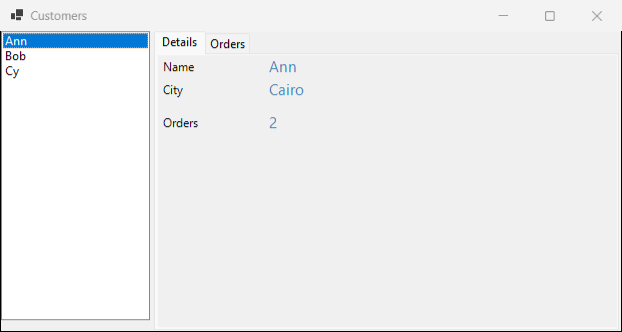
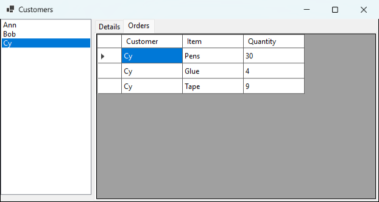

Tutorial 23: Layout and richer controls
Make a window that looks right at every size, with a draggable split bar, tabs, a table of labels and a data grid that shows a filtered table.
What you will learn#
- the layout tools:
Dock,SplitContainer,TabControl,TableLayoutPanel, DataGridViewshowing aDataTablethrough aDataView,- connecting controls with events,
- two layout details that cost time if you do not know them.
Layout in Windows Forms#
Placing controls with x and y numbers (as in tutorial 11) is fine for a small fixed window. A window that the user can resize needs layout containers:
| Tool | What it does |
|---|---|
Dock | glue a control to an edge (Top, Bottom, Left, Right) or fill the rest (Fill) |
SplitContainer | two panels with a bar the user can drag |
TabControl / TabPage | pages with tabs |
TableLayoutPanel | a grid of rows and columns |
FlowLayoutPanel | controls placed one after the other, wrapping |
Anchor | keep the distance to the edges when the window grows |
The program#
# Tutorial 23: layout and richer controls - SplitContainer, TabControl, TableLayoutPanel, DataGridView with a filter
load "dotnet.ring"
using {
"System.Data"
"System.Drawing"
"System.Windows.Forms"
}
# the controls that event code uses
oForm = ""
oList = ""
oNameValue = ""
oCityValue = ""
oCountValue = ""
oGrid = ""
oView = ""
aCustomers = [["Ann","Cairo"],["Bob","Oslo"],["Cy","Tokyo"]]
func main
oForm = uiForm("Customers",620,300)
# A SplitContainer has two panels with a bar between them that the user can drag.
oSplit = new SplitContainer() {
Dock = "Fill"
}
oForm.Controls.Add(oSplit)
oSplit.SplitterDistance = 150 # set it after the control is in the form and has its real size
# Left panel: the list of customers, filling its panel
oList = new ListBox() {
Dock = "Fill"
}
for aCustomer in aCustomers
oList.Items.Add(aCustomer[1])
next
oSplit.Panel1.Controls.Add(oList)
# Right panel: tabs
oTabs = new TabControl() {
Dock = "Fill"
}
oSplit.Panel2.Controls.Add(oTabs)
oDetails = new TabPage() {
Text = "Details"
}
oOrders = new TabPage() {
Text = "Orders"
}
oTabs.TabPages.Add(oDetails)
oTabs.TabPages.Add(oOrders)
# Details page: a table with two columns, labels left and values right
oTable = new TableLayoutPanel() {
Dock = "Top"
ColumnCount = 2
RowCount = 3
Height = 90
}
oNameValue = addRow(oTable,0,"Name")
oCityValue = addRow(oTable,1,"City")
oCountValue = addRow(oTable,2,"Orders")
oDetails.Controls.Add(oTable)
# Orders page: a grid showing a DataTable through a DataView that can filter
oData = new DataTable()
oData.Columns.Add([ :columnName = "Customer", :type = "System.String" ])
oData.Columns.Add([ :columnName = "Item", :type = "System.String" ])
oData.Columns.Add([ :columnName = "Quantity", :type = "System.Int32" ])
oData {
Rows.Add(["Ann","Pens",12])
Rows.Add(["Ann","Paper",5])
Rows.Add(["Bob","Ink",2])
Rows.Add(["Cy","Pens",30])
Rows.Add(["Cy","Glue",4])
Rows.Add(["Cy","Tape",9])
}
oView = oData.DefaultView
oGrid = new DataGridView() {
Dock = "Fill"
DataSource = oView
ReadOnly = True
AllowUserToAddRows = False
}
oOrders.Controls.Add(oGrid)
oList.setSelectedIndexChangedEvent("customerChosen()")
oList.SelectedIndex = 0
uiTest(oForm,"selfTest()")
uiRun(oForm)
uiEnd()
# a label and a value in one row of the table
func addRow oTable, nRow, cTitle
oTitle = new Label() {
Text = cTitle
Dock = "Fill"
TextAlign = "MiddleLeft"
}
oValue = new Label() {
Dock = "Fill"
TextAlign = "MiddleLeft"
Font = new Font("Segoe UI",11)
ForeColor = new Color().SteelBlue
}
oTable.Controls.Add([ :control = oTitle, :column = 0, :row = nRow ])
oTable.Controls.Add([ :control = oValue, :column = 1, :row = nRow ])
return oValue
func customerChosen
nIndex = oList.SelectedIndex + 1
if nIndex < 1
return
ok
cName = aCustomers[nIndex][1]
oNameValue.Text = cName
oCityValue.Text = aCustomers[nIndex][2]
oView.RowFilter = "Customer = '" + cName + "'" # the grid shows only this customer's rows
oCountValue.Text = "" + oView.Count
func selfTest
oList.SelectedIndex = 2
dnAssert("details follow the list",oNameValue.Text,"Cy")
dnAssert("the city",oCityValue.Text,"Tokyo")
dnAssert("Cy has three orders",oGrid.Rows.Count,3)
oList.SelectedIndex = 1
dnAssert("Bob has one order",oGrid.Rows.Count,1)

SELFTEST OK (4 checks)How it works#
SplitContainer#
A SplitContainer has Panel1 (left) and Panel2 (right). You add controls to the panels: oSplit.Panel1.Controls.Add(oList). Give each child Dock = "Fill" so that it follows its panel.
Set SplitterDistance after the container was added to the form. Before that, the container has its default size (200 pixels) and the position is relative to that: the bar jumps when the form's real size arrives.
Tabs#
Create a TabPage for each tab, set its Text (the title on the tab), and add the pages to oTabs.TabPages. The page is a container: add its controls to oDetails.Controls.
TableLayoutPanel#
A table with columns and rows. oTable.Controls.Add([ :control = oTitle, :column = 0, :row = nRow ]) puts a control into a cell (named arguments, because this method has several versions). Dock = "Fill" makes the label fill its cell; TextAlign = "MiddleLeft" centres the text vertically.
DataTable, DataView, DataGridView#
- A DataTable is a table in memory: columns, rows.
- A DataView is a window onto a table, with a filter and a sort order.
oView.RowFilter = "Customer = 'Cy'"hides every other row, with a SQL-like expression. - A DataGridView shows data:
DataSource = oView. Because the grid shows the view, changing the filter updates the grid by itself.
oView.Count is the number of rows that pass the filter. (Reading oGrid.Rows.Count right after changing the filter can show the old number, because the grid updates a moment later. Ask the view.)
One list, many controls#
setSelectedIndexChangedEvent("customerChosen()") runs when the user picks a customer. The function fills the labels and sets the filter: this one event keeps the whole window in step. Remember: the controls the event code uses are global variables.
What you learned#
- containers instead of pixel positions,
Dock,SplitContainer,TabControl,TableLayoutPanel,DataTable→DataView→DataGridView,- set the splitter after adding it, ask the view for counts.
Exercises#
- Add a
FlowLayoutPanelat the bottom with three buttons that wrap when the window is narrow. - Sort the grid by quantity when the user clicks a button (
oView.Sort = "Quantity DESC"). - Add a text box that filters the customer list by what the user types.
- Add a third tab with a
PictureBoxthat shows the picture made in tutorial 22.